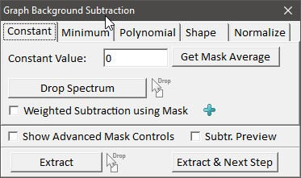
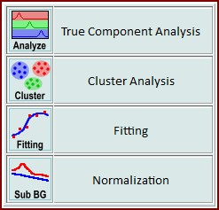
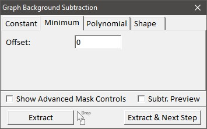
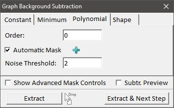
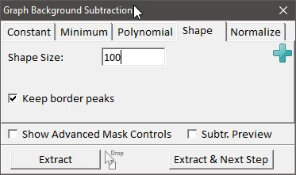
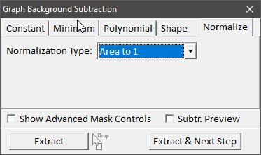
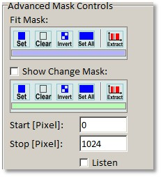
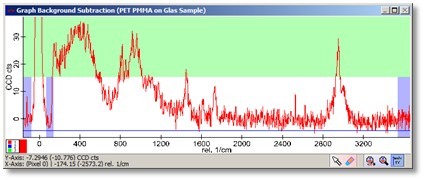

|
描述
使用此对话框，可以使用多种算法从一个或多个光谱中扣除背景。
如果用于多光谱数据集，则可以使用相同的掩模和算法一次校正所有光谱。
输入与结果
输入：
一个图谱对象，可以是单光谱或多光谱对象（例如图像图谱）。
结果：
输入图谱对象的副本，已扣除背景。
后缀：(Sub BG)
用户界面
如果选择"常数"选项卡，则使用用户可定义的静态常数值和/或使用一个单光谱从所有输入光谱中减去背景。

常数值（浮点编辑框）
该常数值将从所有像素和所有光谱中减去。
获取掩模平均值（按钮）
按下此按钮将常数值设置为当前设为掩模的所有像素的平均值，使用当前预览光谱。
放置光谱（按钮和拖放区）
您可以将一个单光谱放置到此按钮上，以便从所有输入光谱中减去该光谱。如果您不想再使用该单光谱进行减法，请点击该按钮。
如果放置一个单光谱，常数值将设为零；但之后您可以输入一个常数偏移量以进行额外的常数值减法。
使用掩模的加权减法（复选框）
如果勾选，您可以更改掩模以定义应使用哪个光谱区域来计算用于减去放置的单光谱的权重因子。这是一个 Plus 功能。
减法预览（复选框）
如果勾选，蓝色预览图谱将显示减去后的光谱预览，而不是将要减去的线。
提取（按钮和拖放区）
对输入图谱数据对象的所有光谱执行背景扣除，并将结果添加到当前项目中。
您可以将多个其他图谱数据对象拖放到此按钮上进行批处理。
提取并下一步（按钮）
向导功能：使用此按钮，您可以选择是否使用此对话框的结果进行真组分分析、聚类分析、峰拟合或归一化

如果选择"最小值"选项卡，则使用标记区域中所有光谱像素的最小值处的水平线扣除背景。

偏移量（浮点编辑框）：
为找到的最小值添加偏移量。
如果选择"多项式"选项卡，则通过将 n 阶多项式拟合到掩模光谱来扣除背景。
如果使用此背景扣除模式，则所有拉曼峰区域应从掩模中移除 - 除非您使用自动掩模模式。

阶次（整数编辑框）：
用于拟合背景的多项式的阶次。0 阶将减去一条水平线，1 阶将减去一个斜率，等等。
自动掩模（复选框）：
如果勾选，算法将尝试通过自动仅使用光谱噪声像素来忽略峰。因此您也可以在有拉曼信息的像素处设置掩模。
这是 WITec Project Plus 功能。
噪声阈值（浮点编辑框）：
自动多项式模式的噪声阈值。您可以通过更改此参数来水平移动背景水平。
仅在启用"自动掩模"模式时可用。
如果选择"形状"选项卡，则使用从下方逐像素接近光谱的圆润形状来扣除背景。形状方法对于扣除荧光区域非常有效，且使用起来相当容易。
这是 WITec Project Plus 功能。

形状大小：
圆润形状的大小。较小的尺寸将从光谱中扣除更多细节，而较大的尺寸将扣除更粗糙的形状。
保留边界峰：
如果未勾选，则靠近边界像素的峰将被扣除。
掩模：
使用蓝色掩模对像素进行线性插值。
如果选择"归一化"选项卡，则光谱将被归一化到所需值。

归一化类型：
面积归一化为 1 – 掩模内的面积将为 1
面积绝对值归一化为 1 – 掩模内的面积将为 1，对负值使用绝对值
最大峰归一化为 1 – 掩模内的最大光谱值将归一化为 1
最大峰归一化为 100 – 掩模内的最大光谱值将归一化为 100
掩模：
使用蓝色掩模来定义光谱的哪些部分应用于归一化。
显示高级掩模编辑（复选框）：
如果勾选，将显示高级掩模编辑。这些编辑是可选的，您可以直接在预览图谱查看器中更改掩模。

拟合掩模（掩模工具栏）：
使用这些工具按钮可以修改蓝色拟合掩模（使用开始/停止 [像素] 编辑框）。
显示变更掩模（复选框）：
如果勾选，图谱预览窗口中会有一个额外的绿色掩模可以进行操作。使用下面的工具按钮可以修改变更掩模（使用开始/停止 [像素] 编辑框）。
在变更掩模中清除像素将使结果光谱在此位置变平，使用最后一个被掩模像素的值。这在例如多项式拟合在光谱边界处有非常极端值时可能很有用。
开始/停止 [像素]，监听（编辑框，复选框）：
参见掩模操作工具。

预览窗口以红色显示原始图谱对象，以及一条将从原始图谱中减去的蓝色预览曲线。
如果使用多光谱图谱对象（线光谱、图像光谱），可以点击图像中的任何像素来查看所选光谱的预览。